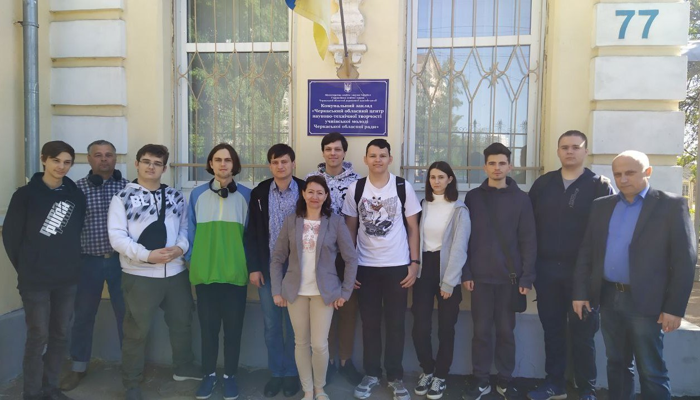
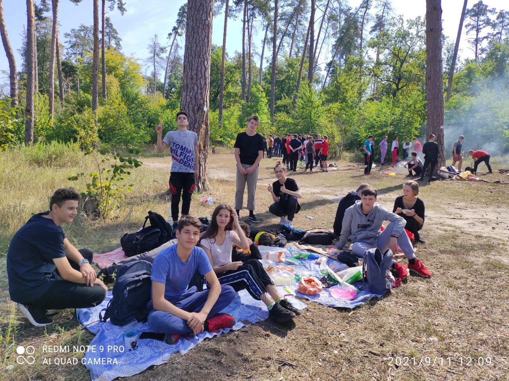
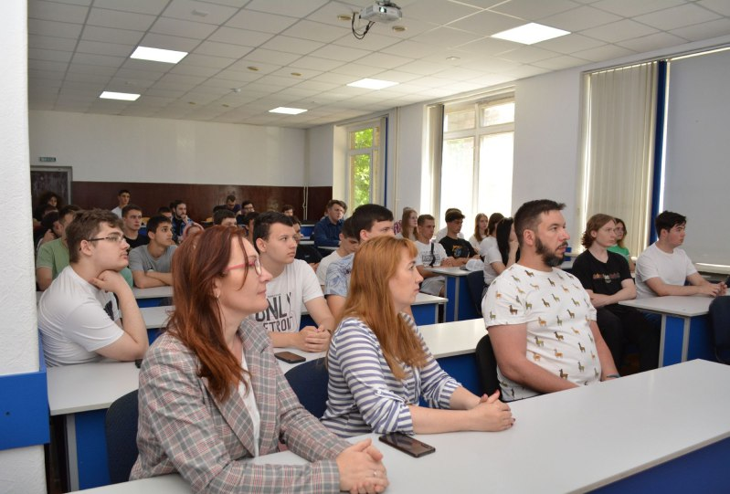
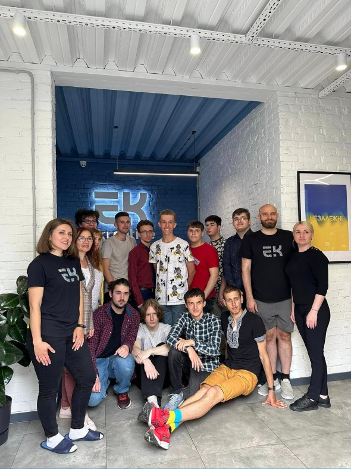

У суботу, 4 травня 2024 року, студенти та викладачі ЧДБК відвідали Черкаський обласний центр науково-технічної творчості учнівської молоді (ЧОЦНТТУМ). Екскурсію організували Михайлюта Сергій Леонтійович, Медолиз Маргарита Миколаївна та Бурмістров Сергій Владиславович з ЧДБК, разом із керівником ЧОЦНТТУМ Брагінець Геннадій Михайлович. Під час екскурсії Олександр Валентинович та Анатолій Васильович представили історію та особливості автомодельного та авіамодельного спорту, демонстрували технології та обладнання для виготовлення та керування моделями. Екскурсія тривала більше трьох годин і була дуже цікавою. Студенти ЧДБК висловили подяку організаторам за можливість розширити свої знання та навички.
В коледжі є традиція - кожен рік першокурснки відвідують лісову галявину і проводять там різні змагання, готують смачну кашу в казанках та знайомляться один з іншим. Ця традиція стала символом єдності та дружби між студентами. Ця зустріч на лісовій галявині залишає незабутні спогади та стають чудовим стартом для їхнього коледжного життя.


31 травня 2023 року відбулась відкрита лекція "Бізнес-аналітика та Data-аналітика", де спікером виступив Руслан Бабко, бізнес-аналітик міжнародної компанії з офісом у Черкасах. Він розповів про роль цих аналітичних напрямків у сфері ІТ, висвітлив основні завдання аналітиків та підкреслив важливість математичних навичок у цій професії. Серед головних функцій бізнес-аналітиків – збір, аналіз та інтерпретація даних для оптимізації діяльності компаній. Бабко також підкреслив значення робочого балансу та раціонального розподілу сил для уникнення перевантаження.
25 травня 2023 року студенти та викладачі кафедри комп'ютерної інженерії та інформаційних технологій, а також відділення інженерії програмного забезпечення, відвідали IT-компанію "еkreative" у рамках навчальної практики. Сергій Цибровський, андроїд девелопер компанії, провів екскурсію по 4 офісах, розповів про організацію роботи та інноваційні проєкти для клієнтів. Учасники побачили опен спейс компанії, де працюють розробники, та отримали додаткову мотивацію для розвитку своїх навичок.
